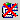
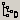

Cette rubrique décrit tous les éléments
du menu principal. En utilisant ce menu, vous pouvez accéder à
un grand nombre de fonctions différentes.
Fichier - Menu déroulant pour
certaines opérations générales et fonctions du Gestionnaire
de Sites
Gestionnaire de Sites - Ouvre le Gestionnaire
de Sites
Copier la connexion dans le Gestionnaire
de Sites - Copie la connexion actuelle dans le Gestionnaire de Sites
comme une nouvelle entrée
Connexion au site par défaut
- Vous connecte au site par défaut du Gestionnaire de Sites.
Reconnecter - Vous connecte au dernier
serveur auquel vous étiez connecté. Utile quand vous avez
perdu la connexion. FileZilla bascule automatiquement au dernier dossier
utilisé sur le serveur. Vous pouvez aussi utiliser le bouton
de la barre d'outils.
Déconnecter - Vous déconnecte
du serveur FTP. Vous pouvez aussi utiliser le bouton

de la barre d'outils.
Quitter - Vous déconnecte du
serveur et quitte FileZilla. Tous les fichiers en file d'attente de transfert
qui n'ont pas encore été traités sont mémorisés
pour la prochaine fois que FileZilla démarrera de sorte que le transfert
pourra se poursuivre.
Édition
Paramètres - Ouvre la boîte
de dialogue des options de FileZilla. Vous pouvez Configurer
FileZilla ici.
Exporter les paramètres - Exporte
tous les paramètres de FileZilla dans un fichier .xml. Quand vous
sélectionnez cet élément de menu, il vous est demandé
un nom de fichier dans lequel les paramètres seront exportés.
Cette fonction est utile si vous voulez faire une sauvegarde des paramètres
ou si vous voulez copier les paramètres vers une seconde machine.
Importer les paramètres - Importe
les paramètres d'un fichier .xml précédemment exporté.
Transfert - Ce menu déroulant
vous permet de contrôler les transferts de fichiers.
Type de Transfert - Sélectionne
le type de transfert actuel. Vous pouvez choisir entre ASCII, Binaire
et Auto. Si vous sélectionnez ASCII, tous les fichiers
seront transférés en mode ASCII. Si vous sélectionnez
Binaire, tous les fichiers seront transférés en mode
binaire. Si vous sélectionnez Auto, FileZilla détecte
et choisit le type de transfert en fonction de l'extension du fichier. Vous
pouvez entrer quelles extensions seront considérés comme fichiers
ASCII dans la section ASCII/Binaire des options.
Vous devriez laisser ce paramètre sur Auto, si vous ne voulez
pas forcer un type de transfert spécifique. Une mauvaise option peut
entraîner une corruption des fichiers.
Écrasement des fichiers - Cet
élément de menu ouvre un sous-menu. Dans ce sous-menu vous
pouvez régler le comportement du transfert des fichiers par défaut
quand le fichier cible existe déjà. Le paramètre par
défaut est Demander. Quand cette option est sélectionnée,
FileZilla vous demandera à chaque fois comment agir quand une cible
existe déjà.
Transfert Manuel - Ouvre la boîte
de dialogue de Paramètrage de transfert manuel. Vous devrez
entrer l'adresse du serveur, le chemin et le dossier du fichier local et
du fichier distant et le type de transfert (Transfert ou Téléchargement)
qui devra être établi. C'est particulièrement utile
si vous voulez transférer des fichiers cachés qui n'apparaissent
pas dans la liste du répertoire ou s'il n'est pas possible de lister
le contenu du répertoire.
Affichage - Contrôle l'aspect
visuel de la fenêtre principale.
Rafraîchir les vues - Rafraîchit
l'affichage des fichiers et dossiers. Vous pouvez aussi utiliser le bouton
de la
barre d'outils.
Afficher les fichiers cachés
- Certains serveurs n'affichent pas les fichiers cachés comme les
fichiers dot (noms de fichiers commençant par un point) par défaut.
Activez Afficher les fichiers cachés si vous voulez voir de
tels fichiers. Cependant, tous les serveurs ne supportent pas cette fonction
et peuvent retourner une erreur ou un listage de répertoire rompu
ou incomplet. Soyez donc prudent en activant cette fonction.
Barre d'outils - Cache ou affiche
la barre d'outils
Barre d'état - Cache ou affiche
la barre d'état
Barre de Connexion rapide - Cache
ou affiche la barre de connexion rapide
Arborescence Locale - Cache ou affiche
l'arborescence locale. Vous pouvez aussi utiliser le bouton  de la barre d'outils si elle n'est pas cachée.
de la barre d'outils si elle n'est pas cachée.
Arborescence Distante - Cache ou affiche
l'arborescence distante. Vous pouvez aussi utiliser le bouton

de la barre d'outils.
Journal des Messages - Cache ou affiche
le journal des messages. Vous pouvez aussi utiliser le bouton
de la barre d'outils.
File d'Attente de transferts - Cache
ou affiche la file d'attente des transferts. Vous pouvez aussi utiliser
le bouton  de la barre d'outils.
de la barre d'outils.
Vue de la liste distante - Dans ce
menu déroulant vous pouvez modifier l'agencement de la liste des
fichiers locaux. Vous pouvez choisir entre les styles Détails,
Liste, Petites icônes et Grandes icônes.
Vous pouvez aussi sélectionner quelles colonnes seront visibles dans
le style d'affichage Détails. Les colonnes Taille de fichier,
Date/Heure et Permissions peuvent être affichées/cachées.
File d'Attente
Traitement de la File d'Attente -
Si cette option est cochée, FileZilla exécute la file d'attente.
Utiliser les connexions multiples
- FileZilla peut transférer jusqu'à 10 fichiers (ce nombre
peut être réglé dan la boîte de dialogue des paramètres;
il est de 2 par défaut) simultanément si cette option est
activée. Si vous ne voulez pas que FileZilla utilise les connexions
multiples, désactivez cette fonction. Vous pouvez aussi avoir à
désactiver cette fonction pour les serveurs qui ne supportent pas
les connexions multiples. FileZilla peut détecter de tels serveurs
automatiquement, mais certains serveurs incorrectement configurés
peuvent quand même vous interdire l'accès pour un certain temps
quand vous tentez d'établir des connexions multiples, et donc désactivez
cette prévention de problème pour certains serveurs.
Exporter - Exporte tous les éléments
de la file d'attente dans un fichier.
Importer - Importe tous les éléments
de la file d'attente à partir d'un fichier externe.
Serveur
Changer le mot de passe - Vous permet
de modifier le mot de passe utilisé pour la connexion au serveur.
A cause de problèmes de sécurité, tous les serveurs
ne vous permettent pas de changer de mot de passe de cette façon.
Entrer une commande brute FTP - Ouvre
une boîte de dialogue dans laquelle vous pouvez entrer toute commande
FTP. C'est utile si vous voulez exécuter des actions sur le serveur
qui autrement ne sont pas supportées par FileZilla.
Copier l'URL dans le presse-papiers
- Copie l'adresse du serveur actuel et son chemin dans le presse-papier.
Aide - Utilisez ce menu déroulant
si vous avez besoin d'aide.
Contenu - Affiche la table des matières
du Manuel d'Aide.
Index - Affiche l'index du manuel
d'aide.
Chercher - Ouvre la page de recherche
du manuel d'aide
A propos de FileZilla... - Ouvre la
fenêtre A propos de... de FileZilla qui contient certaines informations
utiles.
A partir de la Barre d'Outils, vous avez un accès
rapide à beaucoup de fonctions importantes. Quand une fonction n'est
pas disponible, l'icône correspondante apparaît en grisé.
En utilisant cette barre de Connexion Rapide
vous pouvez vous connecter rapidement à un serveur FTP. Quatre champs
de texte sont disponibles.
Dans le premier champ vous devez entrer l'adresse du serveur FTP. Il peut aussi
bien s'agir d'un nom d'hôte (comme ftp.sourceforge.net) que d'un IP, mais
FileZilla supporte aussi les adresses avec un nom d'utilisateur, un mot de passe
et un numéro de port dans l'adresse. La syntaxe complète pour
l'édition du champ d'adresse est: [protocol://][User:Pass@]Host[:Port][/Path]
Les paramètres entre [ ] sont optionnels. Le premier paramètre
spécifie le protocole qui devrait être utilisé pour vous
connecter au serveur. Les protocoles supportés sont ftp://,
ftps:// (FTP sur SSL) et sftp:// (FTP sécurisé utilisant
SSH2). Si aucun protocole n'est spécifié, ftp:// sera utilisé.
Le second paramètre spécifie le nom d'utilisateur et le mot de
passe qui devrait être utilisé pour vous connecter au serveur.
Le paramètre optionnel suivant spécifie le port sur lequel le
serveur est localisé. Si le port n'est pas spécifié, FileZilla
utilisera le port 21. Le dernier paramètre spécifie le chemin
distant sur lequel FileZilla devra basculer pour une connexion.
Les deux champs d'édition suivants spécifient
le nom d'utilisateur et le mot de passe qui doivent être utilisés
pour la connexion au serveur. Si vous laissez le champ de nom d'utilisateur
vide, une session anonyme sera sélectionnée. Les deux champs seront
remplacés si vous spécifiez un nom d'utilisateur et/ou un mot
de passe dans le champ d'adresse.
Le dernier champ spécifie le port du serveur
FTP. Par défaut cette valeur est réglée sur 21. Changez
cette valeur si le serveur est localisé sur un autre port. Ce champ sera
remplacé si vous spécifiez un nom d'utilisateur et/ou un mot de
passe dans le champ d'adresse.
Cliquez sur Connexion Rapide si vous êtes
prêt. FileZilla va alors se connecter au serveur FTP. Si vous avez entré
des information non valides, FileZilla affichera un message d'erreur. La flèche
attenante au bouton Connexion Rapide ouvre un menu déroulant. Si vous
utilisez la fonction Effacer du menu, vous pourrez vider les champs de
la barre de connexion rapide. Dans ce menu, une liste des 10 serveurs les plus
récemment visités dans la session actuelle est mémorisée.
Sélectionnez un serveur dans cette liste pour vous y connecter.